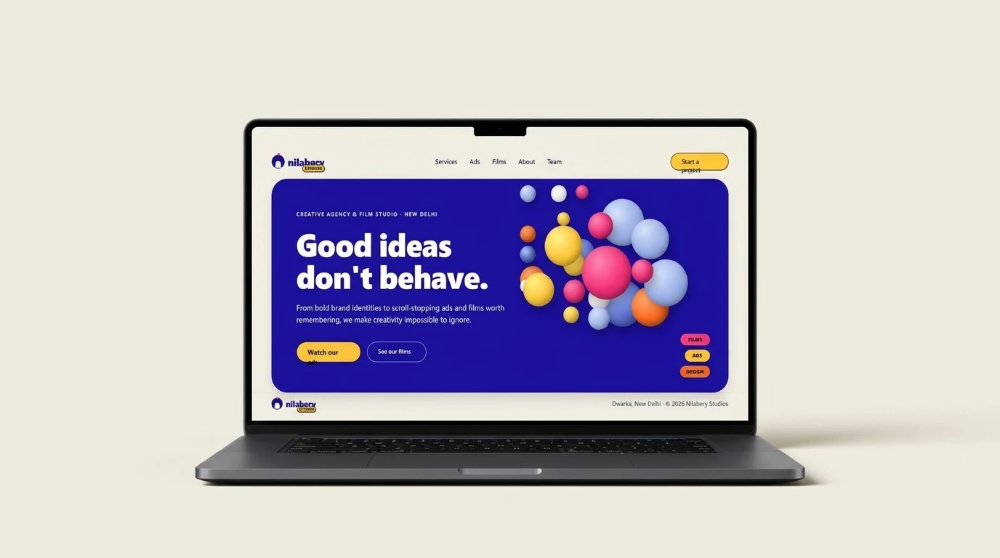

Interaction Design
AI Workflow
nilaberry studios
2026Explored how AI can accelerate website design while applying UX principles and interaction design to refine the generated experience for nilaberry studios.